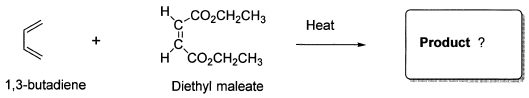

令和元年度（再試験） 問4 有機化学及び燃料
Diels-Alder付加開化反応に関する次の記述のうち、最も正しいものはどれか。

①
例として示した上記反応は、室温か又はそれより少し高い温度で進行し、立体特異的にトランス二置換シクロヘキセンのみを与える。
②
反応は環状の遷移状態を経由して進行し、すべての結合の変化が多段階に起こり、中間体を生成する。
③
［4+2］π電子の反応と同様に、2つのアルケン間の［2＋2］付加も熱反応によって進行する。
④
反応は、アルケン成分（ジェノフィル）に電子供与基があると最も速く起こる。
⑤
反応の立体化学の特徴として、ジエンとジエノフィルがエキソ体でなく、エンド体を与えるように配列する。
正答
⑤ 反応の立体化学の特徴として、ジエンとジエノフィルがエキソ体でなく、エンド体を与えるように配列する。
Diels-Alder反応をするとき、ジエンと反応するアルケンやアルキンはジエノフィルと呼ばれます。
Diels-Alder反応は通常、立体的に込み合いひずみが大きい状態にも関わらずエンド付加物を優先的に生成します。これは二次的軌道相互作用と呼ばれるジエンとジエノフィル間での引力的な相互作用により結合形成前の位置関係が固定されるためです。
エンド付加物は動力学的に有利ですが、熱力学的にはエキソ付加物の方が安定な場合があります。エンド則は、Diels-Alder反応の重要な特徴の1つとして広く認識されています。
1番の反応は、環形成後も立体構造がそのまま反映されることからシス二置換シクロヘキセンが得られます。
2番について、Diels-Alder反応は協奏的に進行し、中間体を経由しません。
3番について、[2+2]付加は熱反応では起こりにくく、通常は光化学反応で進行します。両分子のπ軌道の位相が重ならなければ反応は進みません。[2+2]付加の場合、光により片方の分子のπ電子を励起させることで位相が重なり反応が進みます。
4番について、Diels-Alder反応は、ジエンのHOMOとジエノフィルのLUMOのエネルギー差が小さいほど反応が進みます。つまりジエンに電子供与基をつけてHOMOのエネルギーを上げ、ジエノフィルに電子吸引基をつけてLUMOのエネルギーを下げた場合に反応が速く進行します。